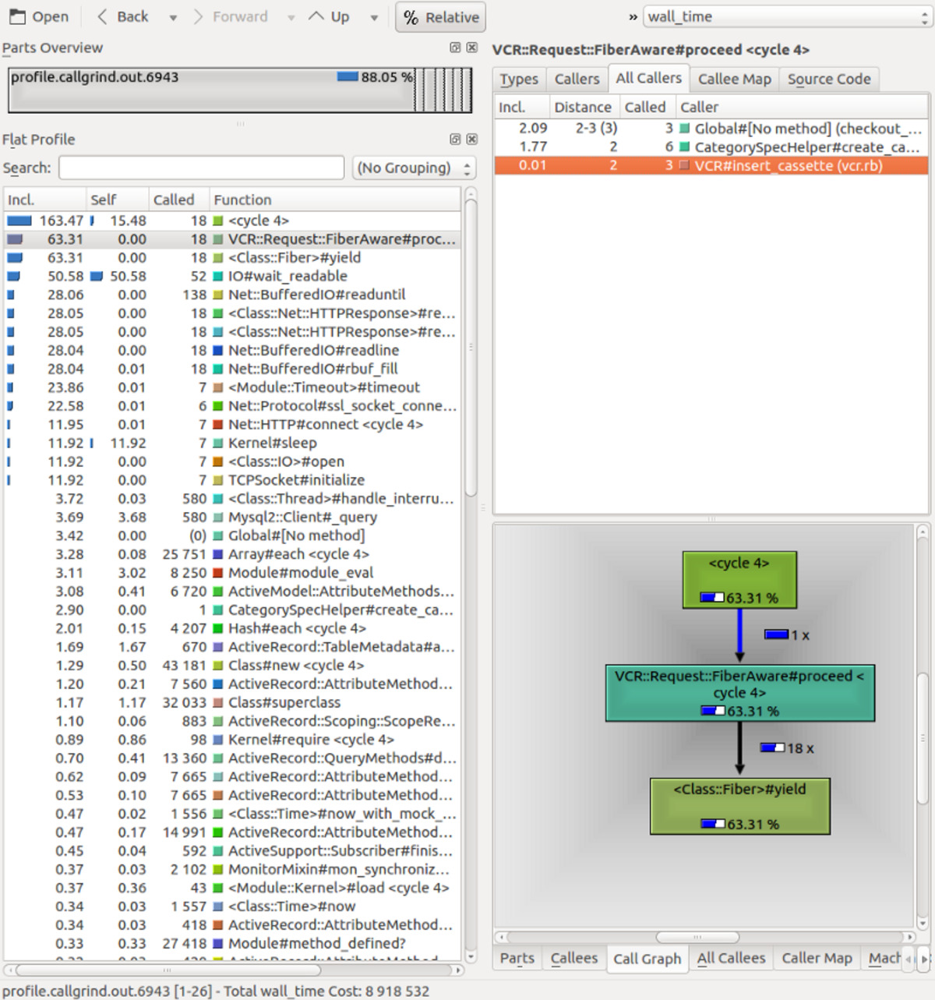

We got a 6-year-old Rails app with ~370k LOC and a ~6k-test suite which took 24 minutes to complete. Not good! We took a few days off of the main project to see if we could make things better.
More often than not, test suites are the nasty underbelly of a Rails app. Size and age just aggravate the problem. Tests are seldom a high priority in any project, and speed might not be an issue at all in smaller apps where the whole test suite might take just a few seconds to complete. As the project grows and the CI takes increasingly longer to complete, spec speed suddenly becomes more of an issue.
“Small” and “new” are not exactly the case for a certain Rails project we’re working on here at Guava. We’re talking about a 6-year-old e-commerce portal with ~370k LOC, a couple million customers and a ~6k-test, 300-spec suite which took, on average, a whopping 24 minutes to complete in our CI. Not good! So we took a couple of days off the main project to see if we could make things better — or less worse.
Preliminaries — someone must have solved this!
The first step we took was, of course, to do some “literature review”, so to speak. Googling “improving rspec spec speed” will yield dozens of “10 ways to improve spec speed”-like articles, with more or less the same tips repeated over and over: make less DB hits, make sure the tests don’t do external requests, don’t use js: true unless you need to, etc. Solid points, but all of them were either already used in our codebase or impractical to implement in a project this size.
We would need to find our own solutions.
Bird’s eye view: “macro” profiling
The first step in any kind of optimization is to assess the current situation. Profiling the test suite can help identify possible bottlenecks. Since we’re using RSpec, this first step was just running the whole suite with the --profile=100 flag, which outputs the 100 slowest examples and the 100 slowest example groups.
Unfortunately, most of the 100 slowest tests were similarly slow, with the slowest completing at around 8 seconds and the fastest (of this “top 100 slowest” group) at around 4 seconds. In other words, they all took more or less the same time (at least in order of magnitude) to complete. There was no large “bottleneck” billboard to chase after, no single, minutes-long behemoth of a test to slay.
The “example group” profiling section is where things got interesting. RSpec presents a list of groups (e.g. describe blocks) alongside their total running time and average running time of each example in the group. Again the average running times were very much alike and formed a very mild and reasonable slope, with no individual group that could be singled-out as significantly slower than the rest. However, a few groups caught my attention because of their really long total running time, even though they had good or normal average running times:
Top 100 slowest example groups:
Group 1
3.02 seconds average (151.12 seconds / 50 examples) ./spec/…
Group 2
2.39 seconds average (143.25 seconds / 60 examples) ./spec/…
Group 3
1.7 seconds average (425.19 seconds / 250 examples) ./spec/…
Group 4
1.53 seconds average (145.27 seconds / 95 examples) ./spec/…
…
Group 38
0.64877 seconds average (0.64877 seconds / 1 example) ./spec/…
Group 39
0.62933 seconds average (1.26 seconds / 2 examples) ./spec/…
Group 40
0.59483 seconds average (1.78 seconds / 3 examples) ./spec/…
Group 41
0.58132 seconds average (95.34 seconds / 164 examples) ./spec/…
Group 42
0.20273 seconds average (72.17 seconds / 356 examples) ./spec/…Groups 1 through 4 are clearly candidates for a closer look, but so are groups 41 and 42, which were buried deep in the report because of their relatively good average running times.
Now that we had a list of candidates for examination, it was time to bring in the microscope.
Under the microscope: “micro” profiling with RubyProf
The first spec we examined was Group 3, a large (250 examples) spec that took several minutes to run. After discarding the “obvious” possible culprits described in the literature review section above, we fired up RubyProf, a MRI code profiler.
It would be highly impractical to run a code profiler on a spec with 250 examples, so again we ran rspec --profile on this individual file to get an overview of the examples in this spec. As could be expected, all the examples took a similar time to complete. So we chose a single example among the ones that took a bit more time to complete and dumped a RubyProf call tree at the end of the spec:
group_3_spec.rb
...
it 'does something' do
...
result = RubyProf.stop
printer = RubyProf::CallTreePrinter.new(result)
printer.print(path ".", profile: "profile")
endExamining the generated call tree with KCacheGrind, we found out that IO waits (IO#wait_readable in the screenshot) were responsible for most of the wall time for this particular spec:
 Call tree for a sampled spec example in group_3_spec.rb .
This heavy IO load was odd: all the HTTP requests were handled with VCR and there was no other blatant IO use such as file loading. Further examining VCR configuration lead to an interesting discovery.
The VCR caveat
For those unfamiliar with VCR, it is a ruby gem that records HTTP interactions so that automated tests don’t have to actual HTTP requests each run. The recorded interactions are persisted in disk and committed in the versioning system. In their own words:
Record your test suite’s HTTP interactions and replay them during future test runs for fast, deterministic, accurate tests.
There are many ways to use VCR (insert_cassette, use_cassette, etc). The programmer that wrote this particular spec chose to hook VCR with the top-level describe block, as so:
describe Foo, vcr: true do ...
Unlike insert_cassette and use_cassette, which require a cassette name argument, vcr: true follows the spec’s tree structure, creating directories for example groups (describe/context blocks) and individual cassettes for each example.
This might seem innocent enough, but Group 3 had 250 examples, most of which had some kind of HTTP interaction, resulting in over a hundred cassettes scattered over 40 or so folders. Many of the cassettes were identical, since there were examples that performed the same HTTP requests. For Group 3 alone, almost 2MB of cassettes were loaded! Despite surely being faster than making all the actual HTTP requests, loading this many files from disk was definitely an unnecessary IO strain — as the call tree showed.
Fortunately, we can easily force VCR to record all interactions in the group within a single cassette by using the :cassette_name option:
describe Foo, vcr: { cassette_name: 'foo_spec' } do ...
The resulting new cassette for Group 3 had merely 33KB — orders of magnitude smaller than the previous cassettes. Reduced file size and the elimination of IO overhead caused by loading multiple scattered files significantly reduced spec speed: Group 3 now runs at around 110 seconds, nearly a quarter of the previous run time (425 seconds).
While using a single cassette was not always possible, and not always relevant (in smaller specs, for example), there were a great many specs that suffered loading dozens or hundreds of cassettes.
Brute-forcing FactoryGirl helpers
We know that avoidable DB hits are one of the things that often slow down specs unnecessarily. In other words, tests commonly persist more data than they need to. One of the most easily traceable sources of persisted data are the FactoryGirl helpers (create and also build, which may persist data if associations are needed for that model).
Understanding if a specific test really needs to persist something is hard. Reading the test and making sure it does not touch the DB is not enough because of indirect DB hits which may be buried arbitrarily deep within the call tree of any of the methods used in the test. When you have several thousand tests, it’s basically impossible to have that kind of knowledge over the entire suite. Unless you are reading the spec for a specific purpose (i.e. trying to improve your knowledge of a model or a behavior), spending so much effort towards understanding a spec also represents tremendous re-work — after all, “understanding a spec” is obviously a huge part of the work needed to build a spec.
Thankfully, we don’t have to understand the entire spec suite: we just have to leverage all those man-hours put into writing them by assuming they are correct and making sure the tests pass. So we did a global find-and-replace, replacingcreatewithbuild_stubbed, then we ran the whole suite and did agit checkouton the failing specs. We repeated the process, now swapping createwith build. After the process, our test suite was making several hundred DB hits less than before — for next to zero work.
Tidying up
Beyond the specs themselves, there is an entire load process that also consumes time. There were at least half a dozen gems in the test group that were either unnecessary or no longer used. spec_helper (and rails_helper) are also loaded in each spec, and had several unused or unnecessary code. Even pendingtests can take a toll on the suite run time, since the entire testing apparatus (gems, spec_helper, etc) is still loaded for the test.
Final results
With these three improvements, CI run time fell from 24 minutes to 14 minutes — a 41.6% improvement. The project repo is also 20MB smaller due to the merged cassettes. All in just a couple of days’ work!
These were solid improvements and should be celebrated. However, 14 minutes is still far from ideal for any TDD-style development. At some point in the future, we might want to look into fine-tuning our CI configuration, using a slimmerspec_helper(which is more or less untouched since we were in Rails 3, and loads all of Rails— we’re on Rails 5 now, so we should leverage rails_helperif we can), and perhaps parallelizing some specs if possible.
By Leonardo Brito on September 4, 2017.
Exported from Medium on May 1, 2019.